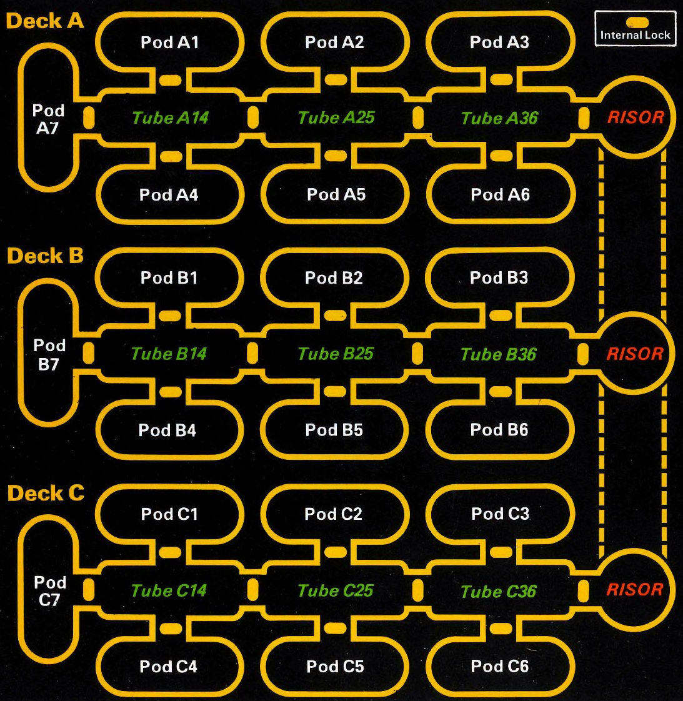

Restore the systems. Restrain the specimens. Survive the wreck.

A radiation pulse has disabled the ship. Ten specimens are loose. Five crew and seven bots stand between Pandora and cold shutdown.
Stun a specimen in your space, then capture it with another crew member or on a later turn. Searches find parts and charges. Medical pod A5 heals crew. GSO repairs faster; Power and Environment slow reserve loss.
Right-click any visible monster, room, bot, item, or crew chit for information. On touch devices use Room details, item Details buttons, or tap a specimen. Opening information uses no action. Click any visible crew or bot chit for its name, rank/position, specialty, live statistics, carried equipment, and controlled bots. Gray pods are unsearched, including starting pods. Their items, specimens, and bots are concealed; unseen specimens still attack. Search to reveal contents, then pick up loose item chits. Pickup, drop, and Give are free, even after all actions are spent. Humans and bots in the same space can exchange equipment. Bot activation still uses an action. Damage tints a space light red without revealing hidden contents. New missions have hull damage at A2 and C4. Repair hull damage before searching a room; scanners also skip damaged rooms. A Scanner or Reconbot can search nearby pods remotely. Original map and chits, with streamlined computer rules and fixed pod assignments. This browser saves progress automatically. Keys 1–5 select crew; S search; R repair; T stun; C capture; W wait.
This replaces the current mission in this browser.